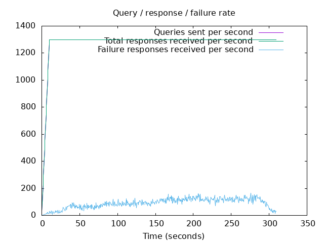
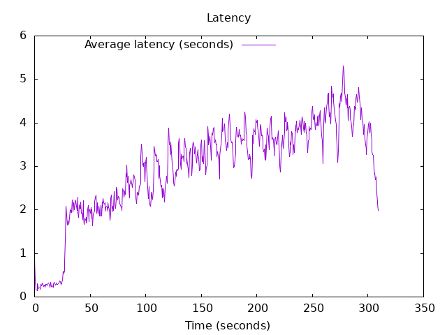

DNS Resolution Performance Testing Tool Version 2.14.0 [Status] Command line: resperf -P 20250620-1045.gnuplot -M doh -s 79.127.218.224 -O doh-uri=https://protective.joindns4.eu/dns-query -d domains_shuffled.list -C 50 -m 1300 -b 1400 -q 1000000 -R -r 10 -c 300 -t 30 -F 0 [Status] Sending [Status] Ramp-up done, sending constant traffic Warning: received a response with an unexpected id: 26991 Warning: received a response with an unexpected id: 6711 Warning: received a response with an unexpected id: 7069 [Status] Waiting for more responses [Status] Testing complete Statistics: Queries sent: 396499 Queries completed: 396496 Queries lost: 3 Response codes: NOERROR 250951 (63.29%), SERVFAIL 27914 (7.04%), NXDOMAIN 117631 (29.67%) Run time (s): 326.413698 Maximum throughput: 1300.000000 qps Lost at that point: 0.00% Connection attempts: 61 (60 successful, 98.36%) DNS-over-HTTPS statistics: HTTP/2 return codes: 200: 396499
 